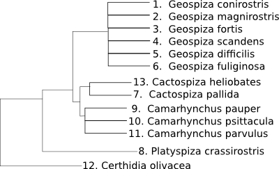
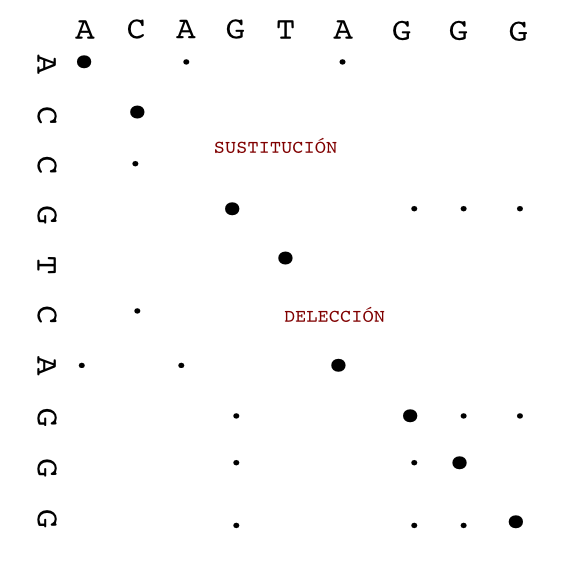
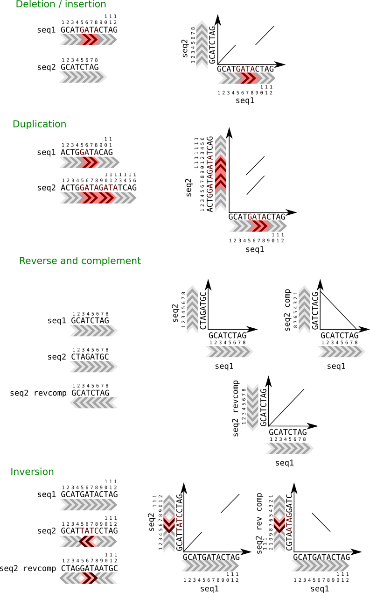
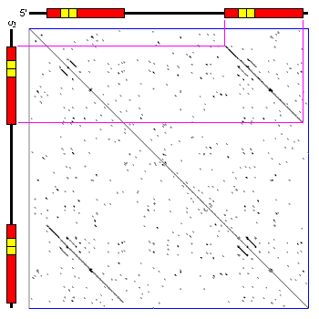
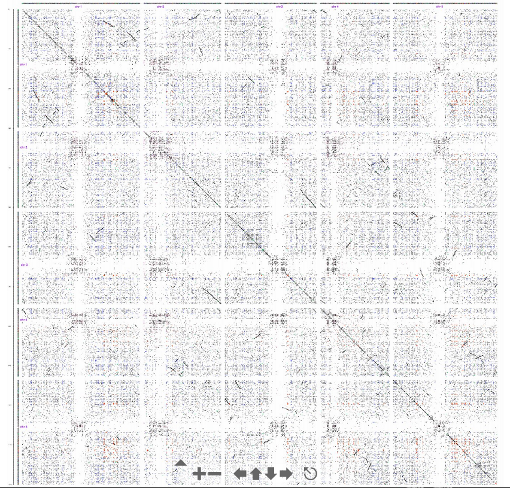
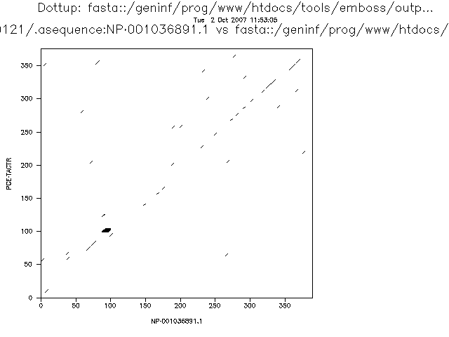
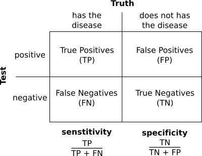

Sequence Alignment
Biological meaning
In general, the more similar two sequences are, the more similar should their functions be and more phylogenetically close they should be. The sequences for the same gene in a group of species will be more different the more distant phylogenetically they are. Sequences will get mutations over time, so the more time has passed since two species split, the more mutations will have their sequences and the more different their sequences will be. Mutations can be residue (nucleotide or aminoacid) substitutions, insertions or deletions.

(From BSCS, Biological Science: Molecules to Man, Houghton Mifflin Co., 1963)

Biological sequences are similar, usually, because they are homologous, because they share a common ancestor. Homology is not a quantitative concept, two sequences can be homologous or not, but they cannot be 50% homologous. They either share a common ancestor or they don’t.
How do we know that two sequences are homologous? Usually we infer it from their similarity. If two biological sequences are similar we tend to infer that they are similar because they are homologous.
Usefulness
Alignments could be used to:
- Quantify the phylogenetic distance between two sequences
- Look for functional domains
- Compare a mRNA with its genomic region
- Identify polymorphisms and mutations between sequences
Sequence alignment
The first step to compare two sequences is, usually, to align them.
No alignment
CGATGCTAGCGTATCGTAGTCTATCGTAC
| ||
ACGATGCTAGCGTTTCGTATCATCGTA
Alignned
-CGATGCTAGCGTATCGTAGTCTATCGTAC
|||||||||||| |||||||||||||||
ACGATGCTAGCGTTTCGTA-TC-ATCGTA-
There could be substitutions, changes of one residue with another, or gaps. Gaps are missing residues and could be due to a deletion in one sequence or an insertion in the other sequence.
Gaps complicate the alignments. Algorithms should take into account the possibility of introducing gaps and once we allow them to create gaps several alignments can be constructed between two sequences.
No gaps (10 matches)
a: ATATTGCTACGTATATCAT
||||||||||
b: ATATATGCTACGTATCAT
With one gap (14 matches)
a: ATAT-TGCTACGTATATCAT
|||| ||||||||||
b: ATATATGCTACGTATCAT
With two gaps (16 matches)
a: ATAT-TGCTACGTATATCAT
|||| ||||||| ||||||
b: ATATATGCTACG--TATCAT
The objective of a sequence alignment is, usually, to align the homologous positions of the two sequences. The homologous positions are the ones that come from the same position in the ancestral sequence. We don’t know the ancestral sequence, so we won’t be completely sure that we have succeeded. Another complementary objective could be to align protein regions that have the same structure or function.
Aligning similar sequences by any algorithm usually creates alignments that are usually correct, but when sequences are very different aligning them could be a challenge. Once a long time has passed since the split of the species the sequences can be so changed by the mutations that any meaningful similarities could have been lost an creating a meaningful alignment could be very difficult.
Evaluating the alignments
To be able to compare the different possible alignments we can score them. We can create a scoring system that gives more points to alignments that are biologically more reasonable. Ideally we would create a scoring system that gives more points to the alignments that align the homologous positions.
A naive scoring system could be to count the number of matching positions, or the number of matching positions along 100 residues. Usually the scoring systems also take into account the number of gaps. They penalize the alignments depending on the number and the length of the gaps present. So the main features taken into account to create an scoring system are usually:
- number of matching residues (taking into account the similarity if they are aminoacids)
- number of missmatches
- number of gaps
- length of the gaps
We can devise different scoring schemes with those measures. For instances:
- scoring schema 1: match +1, mismatch: 0, gap creation: -1 gap extension: -1
- scoring schema 1: match +1, mismatch: -1, gap creation: -1 gap extension: 0
Of course, one alignment will have a different score under different scoring schemes. Speaking of the score of an alignment it is meaningless if we do not take into account the scoring schema used. It also has no sense to compare the scores of different alignments done under different schemes.
Once we have decided which scoring schema to use, the alignment algorithm should try to create the alignment that obtains the maximum score under that particular scoring schema.
Every software implementation of an algorithm will usually have some default values for its parameters. These default values have been calibrated by the software creator to work well in a particular problem. The bioinformatician should be aware of how well those values apply to the particular problem at hand. Usually, if the problem is similar to the one that motivated the creation of the software the default value will work OK because the original creator of the software usually knows how to optimize his software for that task. When our problem is different from the original one we have to be aware of the changes to adapt the software to our needs.
Gobal and local alignments
We could divide the alignment algorithms in two types: global and local. The global algorithms try to create an alignment that covers completely both sequences adding whatever gaps necessary. The local algorithms try to align only the most similar regions. If removing a region from one end of a sequence improves the alignment score they will do it.
Local alignments are usually the best option unless we are sure that the sequences are similar in all its extension. Besides, the local alignment algorithms will create a global alignment with both sequences covered if they are similar enough.
Global
TACGGGGCTAGCTA-TCGTAG
|||| ||| ||||||
TAGC----TAG----TCGTAG
Local
TAGCTA-TCGTAG
|||||| ||||||
TAGCTAGTCGTAG
The main practical problem with local alignment algorithms is that they are computationally more demanding that its gobal equivalents. Global alignments are usually only used within the multiple alignment algorithms (alignments with more than two sequences).
Alignment methods
Dot plot (or Dot matrix)
This alignment method creates a graphical representation of the alignment. It creates intuitive representations and it has the advantage that it will show different alternative alignments between two sequences. Other, more standard, alignment methods usually give back only one alignment, the best one, unless instructed otherwise.
Dot plot methods are quite good to study the structure of the sequences involved. They can show repetitions, insertions and deletions clearly.
Once we have identified the regions that match between two sequences we could use another method to create a more conventional text based alignment.
To create a dot plot alignment one sequence is put in the horizontal axis and the other in vertical one. The matches between both sequences are shown as marks in the corresponding position.
CATGCT
A x
T x x
G x
C x x
The alignment is shown as a diagonal in the plot.

There are different programs to create dot plots. An example is dotmatcher from the emboss suite.
It is easy to detect big insertions, deletions and forward and reverse repeats.

Tandem duplication.

And we can do a genome wide analysis.

One limitation of the dotplot method is that although we detect similar regions we do not obtain the alignment.
Sensitivity and Specificity
A variation of the dot plot algorithm can compare windows of several residues instead of individual residues. In that case a similarity threshold is set to mark a position as similar. These parameters will influence the sensitivity and specificity of the analysis. If we increase the threshold for a given window size or we decrease the window size for a given threshold we will obtain less spurious signals.

The more stringent the parameters the less noise we will detect, but the more real alignments we will loose. This is related with two very important concepts that can be applied to many bioinformatic and statistical analyses: sensitivity and specificity.
In a dotplot analysis we can draw a dot when two homologous positions match. That would be a true positive. But, if we draw a dot when the two positions are similar but they are not homologous we have a false negative.
With the negatives we have a similar problem. In the dotplot case a negative is a position with no dot. We can have true negatives, positions that does not have a dot and that are not homologous and false negatives, positions that do not have a dot, but that are in fact homologous.
The sentitivity, also called recall, is the proportion of positives that are called positives by the analysis. It is the true positive rate. Ideally we would like to have a 100% percent sensitivity, we would like to mark as positives in the analysis all the true positives.
The specificity is the proportion of true negatives that are called negative by our analysis. It is also know as true negative rate. Ideally we would like to call all true negatives as negatives.

In practice most of the time we will miss some positives, so the sensitivity will be lower than 100% and we will detect signals for some negatives. In the dotplot case a false positive would be a region that is marked as similar, but that it is not homologous and a false negative it is a region that is not marked as similar, but that it really is.
Different analysis or different parameter sets will have different sensitivities and specificities. These are very important characteristics of the analyses.
Smith and Waterman algorithm
There are plenty of algorithms to create text based pairwise sequence alignments.
These algorithms are based on creating a matrix equivalent to the 2D representation created by the dot plot. In those matrices the fragments that will constitute the alignments can be seen as diagonals.
Dotplot diagonals suggest paths in the space of possible alignments. Each of these paths are a possible fragment of the final alignment.

A general approach to detect the path through these diagonals is call dinamic programing. One of the first algorithms implemented following these philosophy was the Needleman-Wunsch algorithm. This algorithm creates global alignments of two sequences given a scoring schema. It is implemented in several programs, one of them is needle from the EMBOSS suite.
########################################
# Program: needle
# Rundate: Tue Oct 02 10:58:05 2007
# Align_format: srspair
# Report_file: /ebi/extserv/old-work/needle-20071002-10580428983041.output
########################################
#=======================================
#
# Aligned_sequences: 2
# 1: SNAK_DROME
# 2: PCE_TACTR
# Matrix: EBLOSUM62
# Gap_penalty: 10.0
# Extend_penalty: 0.5
#
# Length: 462
# Identity: 126/462 (27.3%)
# Similarity: 184/462 (39.8%)
# Gaps: 114/462 (24.7%)
# Score: 440.5
#
#
#=======================================
SNAK_DROME 1 MIILWSLIVH--LQLTCLHLILQTPNLEALDALEIINYQTTKYTIPEVWK 48
::|: ..|.|..|::.......| :.|..::..|
PCE_TACTR 1 MLVNNVFSLLCFPLLMSVVRCSTL------SRQRRQFVFP---- 34
SNAK_DROME 49 EQPVATIGEDVDDQDTEDEESYLKFGDDAEVRTSVSEGLHEGAFCRRSFD 98
|||. .|...|.
PCE_TACTR 35 -----------------DEEE----------------------LCSNRFT 45
SNAK_DROME 99 GRSGYCILAYQCLHVIREYRVHGTRIDICTHRNNVPVICCPLADKHVLAQ 148
..|.|.....|..::::...:..:..||......|.:||| ...||
PCE_TACTR 46 -EEGTCKNVLDCRILLQKNDYNLLKESICGFEGITPKVCCP-KSSHV--- 90
SNAK_DROME 149 RISATKCQEYNAAARRLHLTDTGRTFSGKQCVPSVP-----------LIV 187
||:|:.........| ..||..|::| .|:
PCE_TACTR 91 -ISSTQAPPETTTTER----------PPKQIPPNLPEVCGIHNTTTTRII 129
SNAK_DROME 188 GGTPTRHGLFPHMAALGWTQGSGSKDQDIKWGCGGALVSELYVLTAAHCA 237
||.....|.:|.|.|:...||.....| ||||||:..:|:||:||.
PCE_TACTR 130 GGREAPIGAWPWMTAVYIKQGGIRSVQ-----CGGALVTNRHVITASHCV 174
SNAK_DROME 238 TSGS----KPPDM--VRLGARQLNET--SATQQDIKILIIVLHPKYRSSA 279
.:.: .|.|: ||||...|..| .:...|..:..:..|..:..:.
PCE_TACTR 175 VNSAGTDVMPADVFSVRLGEHNLYSTDDDSNPIDFAVTSVKHHEHFVLAT 224
SNAK_DROME 280 YYHDIALLKLTRRVKFSEQVRPACL----WQLPELQIPTVVAAGWGRTEF 325
|.:|||:|.|...|.|::::||.|| .:..:|.:......|||.|.|
PCE_TACTR 225 YLNDIAILTLNDTVTFTDRIRPICLPYRKLRYDDLAMRKPFITGWGTTAF 274
SNAK_DROME 326 LGAKSNALRQVDLDVVPQMTCKQIYRKERRLPRGIIEGQFCAGYLPGGRD 375
.|..|..||:|.|.:.....|:|.|.|: ..|.....|||:..||:|
PCE_TACTR 275 NGPSSAVLREVQLPIWEHEACRQAYEKD----LNITNVYMCAGFADGGKD 320
SNAK_DROME 376 TCQGDSGGPIHALLPEYNCVAFVVGITSFGKFCAAPNAPGVYTRLYSYLD 425
.||||||||: :||......:::||.||||.||.|..|||||::..:||
PCE_TACTR 321 ACQGDSGGPM--MLPVKTGEFYLIGIVSFGKKCALPGFPGVYTKVTEFLD 368
SNAK_DROME 426 WIEKIAFKQH 435
|| .:|
PCE_TACTR 369 WI-----AEHMV 375
The main limitation of the Needleman–Wunsch algorithm is that it is global, so we should only use it if we know beforehand that both sequences are similar in all its extension.
Smith and Waterman proposed a variation of the algorithm that is capable of generating local alignments. This approach gives better results because it does not force the sequences to be similar in all its extension. If the best, higher scoring alignment, is a global one that aligns completely both sequences the Smith-Waterman algorithm will create it, otherwise it will generate a local alignment.
This algorithm has multiple implementations, one of them is the water program in the EMBOSS suite.
########################################
# Program: water
# Rundate: Tue Oct 02 11:00:39 2007
# Align_format: srspair
# Report_file: /ebi/extserv/old-work/water-20071002-11003873398600.output
########################################
#=======================================
#
# Aligned_sequences: 2
# 1: SNAK_DROME
# 2: PCE_TACTR
# Matrix: EBLOSUM62
# Gap_penalty: 10.0
# Extend_penalty: 0.5
#
# Length: 362
# Identity: 116/362 (32.0%)
# Similarity: 165/362 (45.6%)
# Gaps: 50/362 (13.8%)
# Score: 452.0
#
#
#=======================================
SNAK_DROME 89 EGAFCRRSFDGRSGYCILAYQCLHVIREYRVHGTRIDICTHRNNVPVICC 138
|...|...|. ..|.|.....|..::::...:..:..||......|.:||
PCE_TACTR 36 EEELCSNRFT-EEGTCKNVLDCRILLQKNDYNLLKESICGFEGITPKVCC 84
SNAK_DROME 139 PLADKHVLAQRISATKCQEYNAAARRLHLTDTGRTFSGKQCVPSVP---- 184
| ...|| ||:|:.........| ..||..|::|
PCE_TACTR 85 P-KSSHV----ISSTQAPPETTTTER----------PPKQIPPNLPEVCG 119
SNAK_DROME 185 -------LIVGGTPTRHGLFPHMAALGWTQGSGSKDQDIKWGCGGALVSE 227
.|:||.....|.:|.|.|:...||.....| ||||||:.
PCE_TACTR 120 IHNTTTTRIIGGREAPIGAWPWMTAVYIKQGGIRSVQ-----CGGALVTN 164
SNAK_DROME 228 LYVLTAAHCATSGS----KPPDM--VRLGARQLNET--SATQQDIKILII 269
.:|:||:||..:.: .|.|: ||||...|..| .:...|..:..:
PCE_TACTR 165 RHVITASHCVVNSAGTDVMPADVFSVRLGEHNLYSTDDDSNPIDFAVTSV 214
SNAK_DROME 270 VLHPKYRSSAYYHDIALLKLTRRVKFSEQVRPACL----WQLPELQIPTV 315
..|..:..:.|.:|||:|.|...|.|::::||.|| .:..:|.:...
PCE_TACTR 215 KHHEHFVLATYLNDIAILTLNDTVTFTDRIRPICLPYRKLRYDDLAMRKP 264
SNAK_DROME 316 VAAGWGRTEFLGAKSNALRQVDLDVVPQMTCKQIYRKERRLPRGIIEGQF 365
...|||.|.|.|..|..||:|.|.:.....|:|.|.|: ..|.....
PCE_TACTR 265 FITGWGTTAFNGPSSAVLREVQLPIWEHEACRQAYEKD----LNITNVYM 310
SNAK_DROME 366 CAGYLPGGRDTCQGDSGGPIHALLPEYNCVAFVVGITSFGKFCAAPNAPG 415
|||:..||:|.||||||||: :||......:::||.||||.||.|..||
PCE_TACTR 311 CAGFADGGKDACQGDSGGPM--MLPVKTGEFYLIGIVSFGKKCALPGFPG 358
SNAK_DROME 416 VYTRLYSYLDWI 427
|||::..:||||
PCE_TACTR 359 VYTKVTEFLDWI 370
Of course, the result will depend not only on the sequences, but on the scoring schema. For instance, if we use a higher penalty for creating gaps we will obtain alignments with fewer gaps.
The nicest property of the Smith-Waterman alignment is that it has been demonstrated that it will generate the optimal alignment, the one with the highest score, given two sequences and a scoring schema. So, if we could, it would be advisable to use always this algorithm. Take into account that several alignments could have the same score, so we can have several alignments with the highest score.
The main problem with the Smith-Waterman algorithm is its slowness. It works very well with small sequences, but it is not practical when the sequences are large. The time it takes to create the scoring matrix for a naive Smith-Waterman implementation depends of m x n (being m and n the length of the sequences).
More than one alignment
In the dotplot graphical results we saw that some time there could be no just one but several valid alignments. Usually the alignment software that implements the Smith-Waterman algorithm will only print just one alignment by default, the higher scoring one. If there a multiple alignments we will miss them unless we instruct the software otherwise.
Aminoacid substitution matrices
When scoring a position of an alignment between two nucleotide sequences we can consider a match if the nucleotide match and a mismatch if the nucleotides are different
ACGT ACGT
|
ACGT ACAT
^ ^
match mismatch
With the aminoacids we can be more subtle because there are aminoacids that are chemically or functionally similar. For instance, we could score higher a substitution of a hydrophobic aminoacid (like Alanine) with another hydrophic aminoacid (like Valine) than with a polar one (like Glutamine).
But if we decide to use such an scoring schema, how should we decided which are the scores to use for each possible aminoacid substitution? A possible way of creating such an aminoacid subtitution scoring matrix would be to count how many times each pair the possible aminoacid substitutions are found at homologous positions in alignments of homologous proteins. The pairs that tend to appear at the same positions could be considered functionally equivalent and scored higher than the ones that in few instances are found at the same positions. Following this method we could create a substitution matrix for all possible aminoacid substitutions.
A series of matrices built in such a way are the PAM matrices. There are several PAM matrices and not just one because they are built from comparison of sequences that are closer or further appart in evolutionary time. They are named by the number of aminoacid mutations for every 100 aminoacids that differentiate the sequences compared to create the matrices. There are, for instance PAM100, PAM160 and PAM200 matrices. Take into account that a substitution can underlie several mutations, hence there could be more than 100 mutations in 100 aminoacids. A higher number is related with a longer evolutionary time.
Another commonly used set of matrices are the BLOSUM matrices. They are based on the same idea, but instead of being built with complete alignments they are built by using highly conserved blocks. This allows the BLOSUM matrices to cover longer evolutionary times than the PAM matrices because aligning very distant sequences in all their extension can be challenging, but aligning the most conserved blocks of those sequences could be easier. In the BLOSUM matrices the number reflects the minimum percentage of identity allowed between the sequences so BLOSUM 70 used sequences that were more similar than BLOSUM 50.
We will see that a very related concept, the nucleotide evolution model, is used in the phylogenetic analyses, but they are seldom used by the alignment software.
Statistical significance of the alignments
One general problem with the bioinformatic algorithms is that they usually generate a result, but some times that result could be meaningless. For instance, we could generate two random sequences and align them. The Smith-Waterman algorithm would generate an alignment, but despite being its optimal alignment it would be meaningless.
In the DNA alignments is quite easy to decide with alignments are meaningful because the spurious ones tend to be very short. In the protein alignments it is usually not that clear because we are allowing to aminoacid to be similar and not just identical and that tends to produce longer alignments even when they are meaningless.
The solution to this problem is to calculate some statistic that reflect the significance of the solution obtained. As we will see there is software that calculate these kind of statistical significance measures, like BLAST.